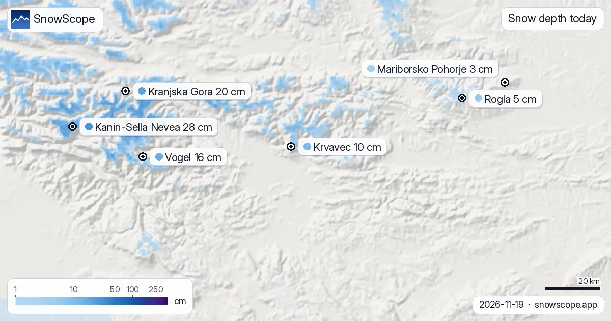

Sneg v Sloveniji danes: nov sneg na Kaninu, Krvavcu in Pokljuki, 19. november 2026
Četrtek, 19. november, je najbolj snežen dan v slovenskih gorah po minulem koncu tedna. Na zgornjih progah Kanina ob meji z Italijo danes zapade okoli 37 cm snega, na Krvavcu 21 cm, na Pokljuki 18 cm in na Voglu 12 cm. Sneg pada na ostanke snega s 13. novembra, zato je danes belih 14 od 19 višjih slovenskih smučišč, šest jih ima 10 cm ali več.
Oglejte si snežno napoved za Slovenia v aplikaciji SnowScopeVišina snega, opozorila in 3D zemljevid, brezplačno.
Kje je danes največ snega
Kanin je močno v vodstvu z 28 cm na zgornjih progah pod zgornjo postajo na 2137 m. Kranjska Gora ima na višjih progah 20 cm, od tega 9 cm današnjega. Vogel nad Bohinjskim jezerom, z žičnicami do 1731 m, ima 16 cm. Na Pohorju Kope še držijo 14 cm, večinoma od minulega konca tedna. Pokljuka ima 13 cm, Krvavec nad letališčem 10 cm na vrhu, skoraj vse novo.
Bolj proti vzhodu je snega malo: Velika planina in Rogla imata po 5 cm, Mariborsko Pohorje 3 cm. Nižja smučišča, ki so bila bela minuli konec tedna, Gače, Sviščaki in Trije Kralji, so spet kopna.

Kako je minil teden
Pred tednom dni, 12. novembra, so bile slovenske smučarske gore skoraj kopne: Vogel je imel na zgornjih progah 1 cm, Krvavec in Kranjska Gora nič. Potem je sneženje v petek, 13. novembra, zajelo skoraj vsa pogorja. Do sobote, 14. novembra, je imel Vogel 30 cm, Rogla in Velika planina 19 cm, Golte 18 cm in Soriška planina 17 cm. Celo Gače, kjer žičnice segajo le do 964 m, so imele 38 cm. Kope so dosegle vrh v nedeljo, 15. novembra, z 29 cm, Mariborsko Pohorje s 13 cm. Tisto nedeljo je bilo belih 16 od 19 smučišč.
Sledili so milejši dnevi. Do srede, 18. novembra, je Vogel padel na 19 cm, Rogla in Velika planina na 6 cm, Gače in Sviščaki so bili kopni. Današnji sneg spet postavlja visoke Julijske Alpe v ospredje.
Kaj so izmerile visoke postaje
Postaja Kredarica na 2515 m pod vrhom Triglava je od 14. do 19. novembra vsako jutro izmerila 30 cm snega: tam zgoraj se je zima že ustalila. Niže je slika drugačna. Postaja Vojsko na 1067 m nad Idrijo je imela 10 cm 14. novembra in 8 cm 15. novembra, od 16. novembra pa kopno. Rateče na 864 m pri Kranjski Gori in Ljubljana so bile ves teden brez snega.
Sneg, ki ga vidite na progah, je torej gorski sneg. Vasi in doline so še zelene, kar je pomembno za vožnjo v hribe in za tek na smučeh na nizki nadmorski višini.
V primerjavi s preteklimi zimami
Na sredini Kanina, okoli 1622 m, je danes 19 cm. V preteklih zimah je bila tam 19. novembra običajna višina le 2 cm in le vsaka četrta zima je imela več kot 10 cm. Pokljuka na 1413 m ima 5 cm proti običajnim 2 cm, Vogel na 1152 m 3 cm proti 1 cm, Krvavec na 1718 m 2 cm, kjer je za ta datum običajno kopno.
Izjema je Kranjska Gora: njena sredina na 1188 m je danes kopna, običajno leto pa ima tam okoli 2 cm. Na kratko: visoke Julijske Alpe so pred običajnim koledarjem, srednji pas gora je približno normalen, nižje proge pa so tam, kjer so sredi novembra običajno.
Naslednji dnevi
Petek, 20., in sobota, 21. novembra, sta po vseh napovedih suha, kar novemu snegu da čas, da se sesede. Naslednji snežni dan je nedelja, 22. novembra, predvsem na zahodu: Kranjska Gora 7 do 13 cm na zgornjih progah, srednja napoved 10 cm; Vogel 4 do 15 cm, srednje 6 cm; Pokljuka 1 do 12 cm, srednje 5 cm; Krvavec 0 do 5 cm, srednje 4 cm.
Vzhod čaka do četrtka, 26. novembra, ko bi Mariborsko Pohorje lahko dobilo 0 do 7 cm (srednje 4 cm), Rogla pa okoli 3 cm. Za ves teden od 20. do 26. novembra srednja napoved da okoli 12 cm za Kranjsko Goro (8 do 15 cm), 7 cm za Vogel (5 do 17 cm) in Mariborsko Pohorje (0 do 10 cm), 6 cm za Pokljuko, 5 cm za Roglo in 4 cm za Krvavec.
Načrtovanje prvega smučarskega dne
Nov sneg na zgornjih progah še ne pomeni, da žičnice obratujejo. Slovenska smučišča odprejo, ko imajo trdno podlago, pogosto z lastnim snegom na glavnih progah, zato pred odhodom preverite uradne kanale smučišča. Za naravni sneg sta trenutno najboljša Kanin in Vogel, sledita Kranjska Gora in Pokljuka.
Turno smučanje je po takem dnevu mamljivo, a nov sneg leži na tanki, neenakomerni stari podlagi in na travi: ostanite na položnem terenu. Na jugu so hrvaške gore po minulem koncu tedna spet kopne, Bosna in Hercegovina pa sneg čaka konec prihodnjega tedna.
Nasveti za smučarje
- Današnji sneg je gorski sneg: Kanin, Kranjska Gora, Vogel, Pokljuka in Krvavec so beli, doline zelene.
- Naslednji snežni dan: nedelja, 22. november, predvsem v Julijskih Alpah.
- Za novice o odprtju preverite uradne kanale smučišč.
More maps (external sites)
About these numbers
Sneg na progah: zgornje proge vsakega smučišča na dnevnem zemljevidu snega SnowScope. Izmerjeni sneg: meteorološke postaje, odčitek ob 7. uri po lokalnem času. Prihodnji sneg: najnižja, srednja in najvišja napoved za zgornjo postajo vsakega smučišča.
Cite this report
For research, teaching or the press: the numbers and charts are free to reuse under CC BY 4.0 with this citation.
SnowScope (2026), Sneg v Sloveniji danes: nov sneg na Kaninu, Krvavcu in Pokljuki, 19. november 2026, https://snowscope.app/blog/sl/2026/11/slovenia-fresh-snow-kanin-krvavec-pokljuka-19-november-2026.html, accessed 2026-11-19
SnowScope (Atlas Labs). (2026, November 19). Sneg v Sloveniji danes: nov sneg na Kaninu, Krvavcu in Pokljuki, 19. november 2026. SnowScope snow reports. https://snowscope.app/blog/sl/2026/11/slovenia-fresh-snow-kanin-krvavec-pokljuka-19-november-2026.html
BibTeX
@misc{snowscope2026sloveniafreshsnowkaninkr,
author = {{SnowScope (Atlas Labs)}},
title = {Sneg v Sloveniji danes: nov sneg na Kaninu, Krvavcu in Pokljuki, 19. november 2026},
year = {2026},
month = nov,
howpublished = {\url{https://snowscope.app/blog/sl/2026/11/slovenia-fresh-snow-kanin-krvavec-pokljuka-19-november-2026.html}},
note = {Published 2026-11-19 15:49 UTC; accessed 2026-11-19}
}· CC BY 4.0 · Methods, data and tools →
Follow Slovenia
Brezplačno: sporočilo, ko prihaja novi sneg, in napoved vsako jutro.